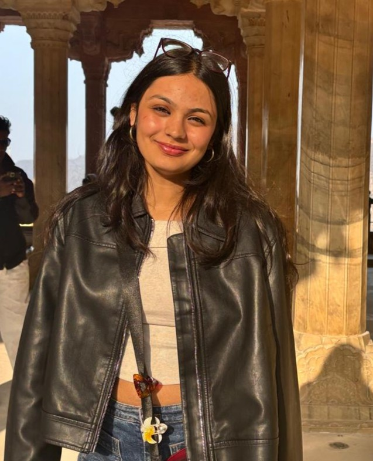

Pick a theme to personalize how you view the portfolio. You can always switch later using the toggle in the nav.
preference saved for this session
Hi, I'm Kanishka Sharma.
A Chemical Engineering student with interests in data analytics, business, product analytics, and consulting — focused on solving problems through data and structured thinking.

Hi there, I'm Kanishka — a Chemical Engineering student at Thapar Institute of Engineering & Technology whose journey gradually evolved beyond core engineering into analytics, product strategy, consulting, and technology-driven problem solving. What began as curiosity around data and systems has grown into a strong interest in understanding how businesses make decisions, optimize processes, and build impactful digital products.
Over time, I've worked on projects involving customer analytics, workflow automation, financial analysis, and UI/UX design — combining analytical thinking with creativity and execution using tools like Python, SQL, PostgreSQL, Power BI, and n8n.
Currently, I served as the Lead UI/UX Designer at Campus Connect, where I independently designed and shipped a live Play Store application while contributing to product growth and user engagement initiatives. I'm passionate about building data-driven and user-focused solutions, and I aspire to grow in roles across Business Analytics, Product Management, Consulting, and Strategy.
I'm a B.Tech Chemical Engineering student at Thapar Institute of Engineering & Technology with growing interests in data analytics, product strategy, consulting, and digital products.
My background in engineering has trained me to think structurally — breaking down complex systems, optimizing processes, and solving problems through logic and data. Over time, that analytical mindset naturally evolved into interests beyond engineering: business analytics, product thinking, and strategic decision-making.
Alongside academics, I've worked on projects involving customer churn analysis, workflow automation, financial analytics, and product design. From building automated data pipelines using Python, SQL, PostgreSQL, and n8n to designing user-focused interfaces and dashboards, I enjoy combining analytical thinking with creativity and execution.
Currently, I work as Lead UI/UX Designer at Campus Connect, where I independently designed and shipped a live Play Store application while contributing to branding, user engagement, and product growth initiatives.
Let's build something →My academic journey and professional milestones — all in one place.
Data analytics and automation systems solving real business problems.
Performed EDA on a Kaggle telecom dataset of 7,000+ customers (21 features) using SQL and Python to identify churn trends and key behavioral drivers. Built data visualizations to analyze contract type, payment methods, tenure, and add-on services. Analyzed customer segments and prioritized high-impact interventions — recommended strategies (long-term contracts, avoid e-checks, target seniors) projected to reduce churn by 5–10%.
Conducted financial and business data analysis on structured datasets using SQL and Power BI to identify key trends and insights. Built interactive Power BI dashboards to visualize analytical findings, evaluate performance patterns, and support strategic data-driven recommendations for decision-making.
Built an end-to-end data analytics pipeline integrating a cloud PostgreSQL database (Supabase) with workflow automation (n8n) to streamline data extraction and transformation. Automated SQL-based data workflows and generated visualization-ready datasets to support scalable data-driven analysis and decision support.
Designed a wastewater treatment system for textile industry effluents using sedimentation and SBR processes based on CPCB discharge standards. Performed engineering calculations including settling velocity using Stokes' Law, Reynolds number analysis, and tank sizing to optimize treatment efficiency. Conducted BOD/COD analysis and mass balance calculations to evaluate pollutant removal performance and overall system effectiveness.
Visual communication, brand identity, and UI design — crafted with Figma, Adobe Suite, and Framer.
Campus leadership, event management, and extracurricular impact across Thapar Institute.
While studying Chemical Engineering, I realized I was deeply drawn toward problem-solving, analytics, strategy, and building systems that create real impact. Over time, working on analytics, automation, and product-related projects helped me discover a strong interest in business-driven and technology-focused roles where I can combine analytical thinking with creativity and execution.
I bring a unique combination of engineering problem-solving, analytical thinking, and product/design understanding. My background in Chemical Engineering trained me to think structurally and solve complex problems, while my experience in analytics, automation, and UI/UX helped me develop a more business-oriented and user-focused mindset.
Chemical Engineering taught me how to approach problems with logic, structure, and systems thinking. Whether it's analyzing data, optimizing workflows, or designing products, I naturally focus on understanding the root cause, breaking problems into smaller parts, and building practical solutions backed by reasoning and data.
Yes — I'm actively open to internships, freelance projects, and full-time opportunities across Business Analytics, Product Management, Consulting, Strategy, and related technology-driven roles where I can contribute, learn, and grow.
I usually start by understanding the core objective and the real problem behind it. From there, I break it into smaller parts, research patterns, analyze possible approaches, and focus on building solutions that are both practical and user-focused rather than unnecessarily complicated.
I'm always open to conversations around analytics, product ideas, design, consulting, and creative problem-solving. Whether you have a project, an opportunity, or simply want to connect — feel free to reach out.
kanishkasharma139@gmail.com linkedin.com/kanishka-sharma github.com/kanishka1125 +91-7404419727 Patiala, Punjab · Ambala, HaryanaDrop me an email and I'll get back to you within 24 hours to discuss your ideas and requirements.
Get in TouchOpens in your mail app